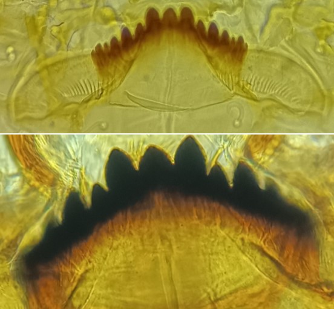
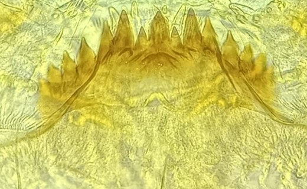
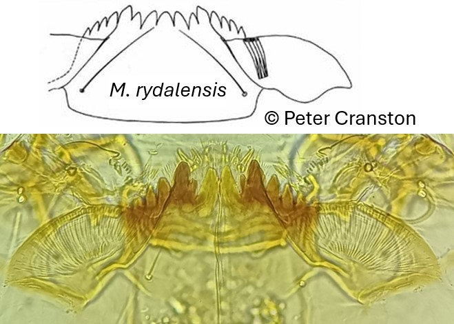

Tribu des Chironomini
Plaques ventromentales délimitent un complexe central de plusieurs dents



Complexe central de 3 dents.
3 dents médianes sont plus hautes que les dents latérales.SI triangulaires. Marges externes des plaques ventromentales externes incurvées
Complexe central de 5-6 dents : Présence d’une dent minuscule entre les deux dents médianes, Antenne avec des organes de Lauterborn alternés
Parfois complexe central de 7 dents. 3 dents médianes sont moins hautes que les dents latérales (M. rydalensis)